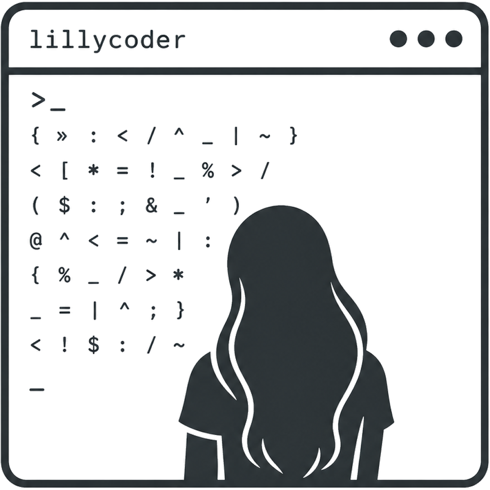

ra-yavuz › lillycoder

lillycoder
A small CLI that drops you into a chat REPL inside any folder. The model on
the other end can read, write, and edit your files, run shell commands,
and install packages, all gated by a per-tool permission prompt. Talks to
any local OpenAI-compatible /v1 endpoint.
What it is
A 10-file Python package plus a CLI shim. You run lillycoder
in a project directory and start typing. The model picks tools from a
fixed set (read_file, write_file,
edit_file, bash, mkdir,
mv, rm, grep, find,
list_dir, pkg_install) to do what you asked.
Every mutating action prompts:
🦊 lilly wants to: write_file("src/index.js", 142 chars)
[y]es [n]o [a]lways for this tool [p]ath: always for this exact target
>What it is not
lillycoder does not start LLM servers, manage Docker, or ship a model.
It expects a server already running on localhost (llama.cpp, ollama, LM
Studio, etc.). On first run it scans common ports and offers to use
whatever it finds, or you pass --api.
Install
Debian / Ubuntu apt
sudo install -d -m 0755 /etc/apt/keyrings
curl -fsSL https://ra-yavuz.github.io/apt/pubkey.gpg \
| sudo tee /etc/apt/keyrings/ra-yavuz.gpg >/dev/null
echo "deb [signed-by=/etc/apt/keyrings/ra-yavuz.gpg] https://ra-yavuz.github.io/apt stable main" \
| sudo tee /etc/apt/sources.list.d/ra-yavuz.list
sudo apt update
sudo apt install lillycoderFrom source (any Linux)
git clone https://github.com/ra-yavuz/lillycoder.git
cd lillycoder
pip install --user -e .Quick start
Have an LLM server running somewhere on localhost. Then in any project:
cd ~/myproject
lillycoder🦊 scanning localhost for LLM servers...
🦊 found 1 endpoint: http://localhost:11434/v1 (ollama, 3 models)
use it? [Y/n] y
✓ ollama · qwen2.5-coder:7b
🦊 lilly is awake · qwen2.5-coder:7b · /home/you/myproject · 11 tools
type a message · /help for commands · /exit to leave
[ctx 1.2k/8k·15%] › what files are in this folder?Compatible servers
| Server | Default port | Notes |
|---|---|---|
llama.cpp llama-server | 8080 | OpenAI /v1 shape native |
| ollama | 11434 | OpenAI surface at /v1 |
| LM Studio | 1234 | built-in local server |
| any other | any | --api http://your.url/v1 |
The model on the other end matters. Tool-calling reliability needs a
model trained for it. lillycoder warns when the chosen model is not in
its known-tool-capable allowlist (Qwen 2.5+, Qwen 3, Gemma 3+, Llama
3.1+, Mistral Small 3, Dolphin 3 R1). Pass --force to
silence.
Pairs with hydra-llm
hydra-llm is a sibling project that manages local LLM servers: it wraps llama.cpp in Docker, ships a curated GGUF catalog with anonymous downloads, and exposes each running model as an OpenAI-compatible endpoint on a stable local port. lillycoder talks that exact shape, so the two compose into a fully local coding agent in one terminal:
# in hydra-llm:
hydra-llm start qwen2.5-32b # or any 'code' tagged model
hydra-llm api qwen2.5-32b # prints the URL
# in your project directory:
lillycoder --api http://localhost:18087/v1
# (lilly auto-detects common local LLM ports too, so just `lillycoder` often works)hydra-llm handles model lifecycle (download, start/stop, system prompts, persistent sessions, optional KDE Plasma widget). lillycoder is the agent on top: file tools, shell tools, grep, permission gating. Use them together, or use lillycoder with whatever local server you already run.
Safety
Hard-banned commands cannot be turned off by --bypass-permissions:
sudo, rm -rf /, rm -rf ~,
mkfs, dd of=/dev/*, recursive
chmod / chown of / or
~, fork bombs. They are refused at the safety classifier
before exec. Writes outside the working directory are also blocked
by default; widen with LILLY_ALLOW_OUTSIDE_CWD=1 if you
really mean it.